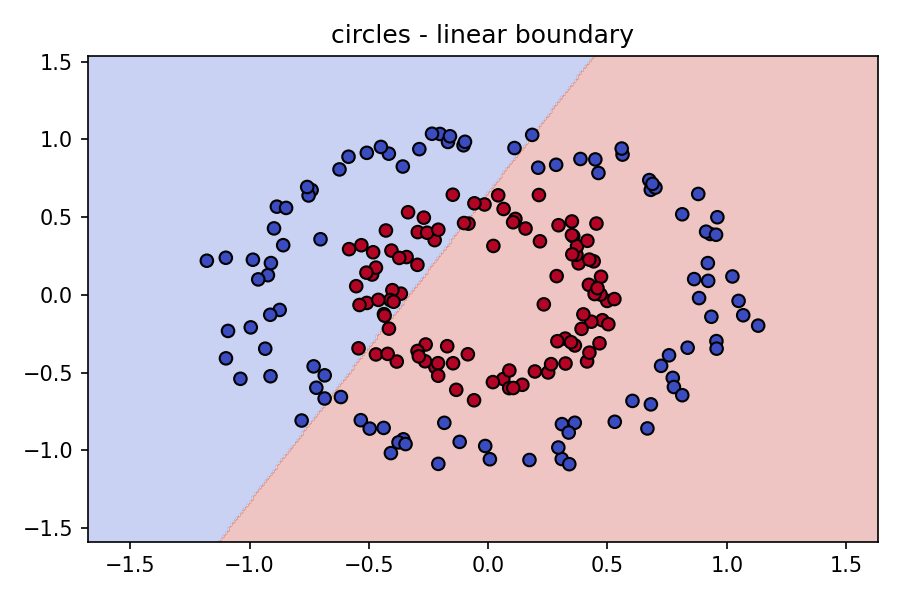
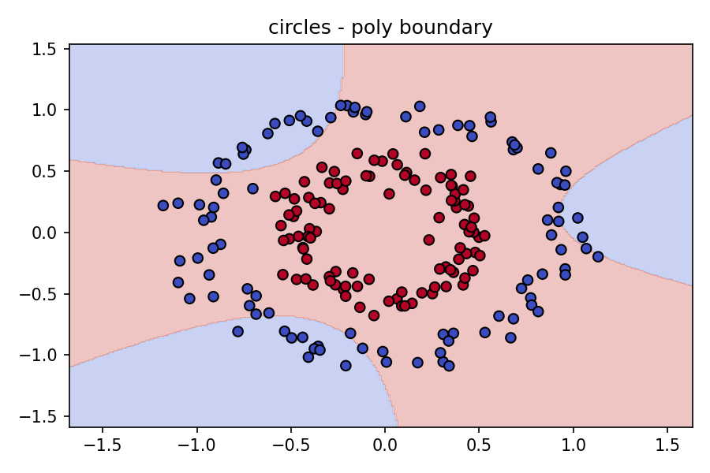

Student ID: 24090533
Module: 7pam2021-0901-2025 – Machine Learning and Neural Network
Note: The word count target is achieved in the main content sections up to the References heading.
Support Vector Machines (SVMs) are a cornerstone method in supervised learning, known for strong generalization and clear geometric intuition. At their core, SVMs aim to separate classes by finding a decision boundary that maximizes the margin, the distance between the boundary and the nearest data points (support vectors). This margin maximization tends to reduce overfitting, providing robust performance even when features are numerous or noisy. Yet, many realistic problems are not linearly separable. Data may be intertwined, clustered, or defined by curved manifolds where no straight line or plane is sufficient.
This is where kernels matter. A kernel function lets an SVM operate in an implicit, higher-dimensional feature space without explicitly computing the mapping. The result is elegant: we keep the efficient optimization but unlock non-linear decision boundaries. In practice, three kernels are commonly used. The linear kernel is fast and reliable when a straight boundary suffices. The polynomial kernel introduces curved decision surfaces, tunable by degree. The radial basis function (RBF) kernel produces flexible, locally adaptive boundaries that often perform well out of the box. Choosing among these depends on data shape, dimensionality, noise, and the trade-off between bias and variance.
This tutorial explains how kernel choice affects behavior and results, demonstrates code using scikit-learn, and visualizes decision boundaries on two synthetic datasets: moons and circles. It also covers practical guidance for preprocessing, hyperparameter tuning, and evaluation, along with common pitfalls and ethical considerations. By the end, you should understand when to use each kernel, how to tune it, and what patterns to look for in your plots and metrics.
To understand kernels, recall the linear SVM objective: find a hyperplane that separates classes with maximal margin. When this separation is not possible in the input space, we can map the data into a higher-dimensional feature space where separation may exist. Kernels compute inner products in that feature space directly, enabling the so-called “kernel trick.” Rather than building explicit transformed features, we use a function \(K(x_i, x_j)\) that measures similarity and drives the optimization.
Linear kernel: The linear kernel uses the standard dot product. It produces straight boundaries and is appropriate when classes are separable by a plane or when you want interpretability akin to a linear classifier. It is efficient in high dimensions, common in text classification where sparse feature vectors make linear boundaries surprisingly effective.
Polynomial kernel: The polynomial kernel expands the feature space via polynomial terms. Its degree parameter controls curvature: degree 2 yields quadratic boundaries; higher degrees produce more complex surfaces. It captures feature interactions naturally but can overfit if degree is set too high or if regularization is weak. Polynomial kernels can work well when relationships are smooth and global rather than highly localized.
RBF kernel: The RBF kernel measures Gaussian similarity, effectively comparing the distance between points and weighting influence locally. It adapts the boundary to local structure: clusters, rings, or intertwined curves. Two parameters dominate behavior: \(C\), which controls margin hardness and the penalty for misclassification, and \(\gamma\), which controls how far each point’s influence reaches. Small \(\gamma\) values yield smoother, broader decision regions; large \(\gamma\) can lead to very fine boundaries and potential overfitting.
These kernels embody different assumptions about data geometry. Linear assumes global linearity. Polynomial assumes global smooth curvature with controlled complexity. RBF assumes locally defined structure and is often a reliable default when the data shape is unknown or clearly non-linear.
Successful SVM training depends on consistent preprocessing and disciplined validation. Features should be scaled, typically to zero mean and unit variance, because SVMs are distance-based. Unscaled features may cause some dimensions to dominate, skewing similarity measures. Pipelines in scikit-learn simplify this process by chaining scaling and model training so that cross-validation evaluates the whole process correctly.
In practice, begin with RBF and a pipeline that scales features. Evaluate with cross-validation, then adjust \(C\) and \(\gamma\). If performance stalls or the decision boundary looks too jagged, reduce \(\gamma\) or \(C\). If the boundary looks overly smooth and misclassifies clusters, increase \(\gamma\) or \(C\). For inherently linear problems, switch to the linear kernel for faster training and simpler decision surfaces. For data that shows global curved trends, try a modest polynomial degree like 2 or 3 and validate carefully.
The snippet below shows the skeleton used in the accompanying notebook. It generates the moons dataset, scales features, fits an RBF SVM, and prepares for plotting. The full notebook produces decision boundaries for all kernels on both datasets and prints accuracy for quick feedback.
from sklearn.datasets import make_moons, make_circles
from sklearn.svm import SVC
from sklearn.pipeline import make_pipeline
from sklearn.preprocessing import StandardScaler
X, y = make_moons(n_samples=200, noise=0.15, random_state=0)
clf = make_pipeline(StandardScaler(), SVC(kernel='rbf', C=1.0))
clf.fit(X, y)StandardScaler operates within the pipeline, ensuring that scaling parameters are learned from the training data and applied consistently. SVC accepts kernel arguments: 'linear', 'poly', and 'rbf'. For polynomial kernels, the degree parameter sets complexity; for RBF, \(\gamma\) defines locality. The notebook saves six PNG files referencing boundaries for each kernel on moons and circles. Place these images in the same folder as this HTML page to render them correctly.
The moons dataset has two interleaving half-moons, a classic non-linear pattern. The circles dataset has concentric rings, which a linear boundary cannot separate. These controlled cases reveal how kernels behave and where they excel or struggle. Explore the plots and compare across kernels to understand the geometry.
Linear kernel on moons: The boundary is straight or nearly so, cutting through the curved structures. Misclassifications cluster in the interleaving regions where classes overlap under a linear projection. Accuracy may be moderate but rarely optimal for this shape.
Polynomial kernel on moons: With degree 3, boundaries bend to follow the arcs, often improving classification. If the degree is too high, boundaries can become overly complex and sensitive to noise, increasing variance and risking overfitting.
RBF kernel on moons: The boundary adapts locally, wrapping around clusters smoothly. With appropriate \(\gamma\), it balances fit and generalization, achieving strong performance without extreme complexity. Overly large \(\gamma\) values may produce jagged boundaries that fit idiosyncrasies rather than structure.
Linear kernel on circles: Separation is impossible with a single line; expect poor accuracy and many errors near the inner ring. This plot illustrates why linear models fail when geometry is inherently circular or radial.
Polynomial kernel on circles: Quadratic and cubic boundaries can encircle regions, drastically improving classification. As degree increases, the boundary can overreact to noise, so validation is crucial. A modest degree is often sufficient.
RBF kernel on circles: RBF naturally encodes radial similarity, producing smooth boundaries that can cleanly separate concentric structures. Proper tuning of \(\gamma\) prevents underfitting (excessively broad boundary) or overfitting (too tight and jagged).
Tuning \(C\), \(\gamma\), and degree is central to SVM success. \(C\) controls the softness of the margin: small \(C\) allows more violations and yields a wider margin, helping generalization but risking underfitting; large \(C\) enforces strict separation, reducing training errors but potentially overfitting. For RBF, \(\gamma\) governs locality: small \(\gamma\) creates smooth, global boundaries; large \(\gamma\) creates very local effects. For polynomial kernels, degree controls the flexibility of the curve and should be kept modest unless data strongly demands complexity.
Evaluation should also include visual inspection of decision boundaries, as plots provide intuition that metrics may miss. A model with comparable accuracy but smoother, more plausible boundaries often generalizes better. Combine quantitative metrics with qualitative visualization to choose kernels and parameters confidently.
SVMs are powerful but sensitive to certain choices. Unscaled features distort distances, undermining kernel similarity and margins. Always use scaling. Overly aggressive \(\gamma\) in RBF can memorize noise; start small and increase cautiously. High-degree polynomials may look impressive on training data but degrade on validation sets. Class imbalance can mislead accuracy; inspect per-class performance and consider class weights. Finally, mixing preprocessing outside a pipeline with cross-validation can leak information; keep scaling inside pipelines so each fold learns scaling only from its training partition.
SVMs with appropriate kernels power diverse applications. In text classification, linear kernels perform well on sparse, high-dimensional vectors like bag-of-words, providing fast training and competitive accuracy. In image recognition or handwriting classification, RBF kernels capture complex spatial relationships and local patterns. In bioinformatics, polynomial kernels can model gene interactions and non-linear profiles. Finance and healthcare benefit from careful kernel selection to balance sensitivity and robustness in noisy domains.
Ethically, model deployment should consider fairness, transparency, and impact. Kernel choices that boost accuracy might still produce disparate error rates across groups if features correlate with sensitive attributes. Regular auditing, bias assessment, and stakeholder consultation are essential. Explainability tools and boundary visualizations can make SVM decisions more transparent, informing responsible use. Ultimately, kernel selection is not only technical but also social: it shapes who benefits from predictions and who bears the cost of errors.
Kernel choice is the lever that turns SVMs from linear separators into adaptable, non-linear learners. Linear kernels excel in high-dimensional, linearly separable settings and remain efficient and interpretable. Polynomial kernels introduce controlled curvature, capturing global trends when degree is moderate. RBF kernels provide flexible, locally responsive boundaries that often deliver strong performance across varied data shapes. Paired with scaling, cross-validation, and disciplined tuning of \(C\), \(\gamma\), and degree, SVMs become reliable tools for classification.
On synthetic datasets like moons and circles, the plots tell a clear story: linear is limited on curved structures, polynomial helps but needs restraint, and RBF typically balances fit and generalization well. In real projects, begin with RBF and a pipeline, inspect metrics and plots, and iterate. When data is clearly linear or very high-dimensional sparse, switch to linear. When global curvature dominates, consider low-degree polynomial. Combine quantitative evaluation with visual intuition, and keep an eye on fairness and impact. With this workflow, SVM kernels become practical, principled, and effective.